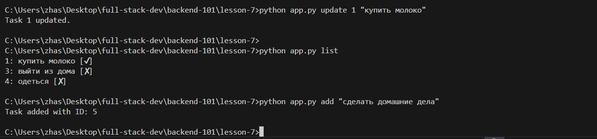

Пожалуйста, ознакомьтесь с моими проектами и перейдите по ссылкам на репозитории.

Проект 1: Консольное приложения для управления задачами
Этот проект представляет собой консольное приложения для создания и управления задачами, включая возможность добавления, редактирования и удаления задач, а также отображения их статуса.
Этот проект представляет собой консольное приложение, которое рассчитывает итоговую сумму заказа с учетом различных скидок и налогов. Пользователь вводит сумму заказа, и система применяет скидки для участников программы лояльности, а также дополнительный налог, если это необходимо.
Особенности:
Применение скидки 10% для участников программы лояльности.
Дополнительная скидка 5% при сумме более 1000.
Поддержка промокодов для дополнительной скидки.
Применение налога в зависимости от текущего времени (минуты).